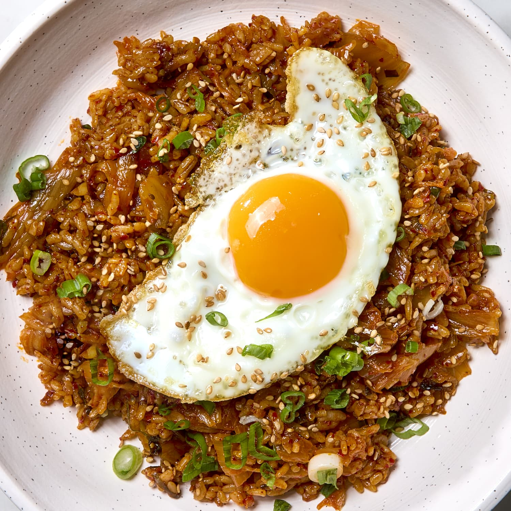

Fried Rice

Description
Recipe for Fried Rice!
Ingredients
- Day old rice
- MSG
- Chinese sausage or your choice of meat
- Carrots/Peas packaged
- Fried Rice Powder packet
- Eggs
- Soy Sauce
Steps
- If using different meats, cook them
- In seperate panCook garlic/frozen veges
- cook eggs with the pan with veges
- Add rice
- Add sauce/powder
- Place in meats
- Enjoy!
Home